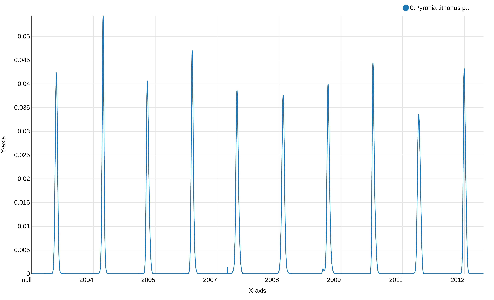
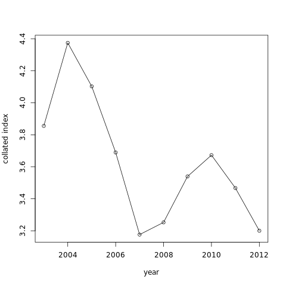
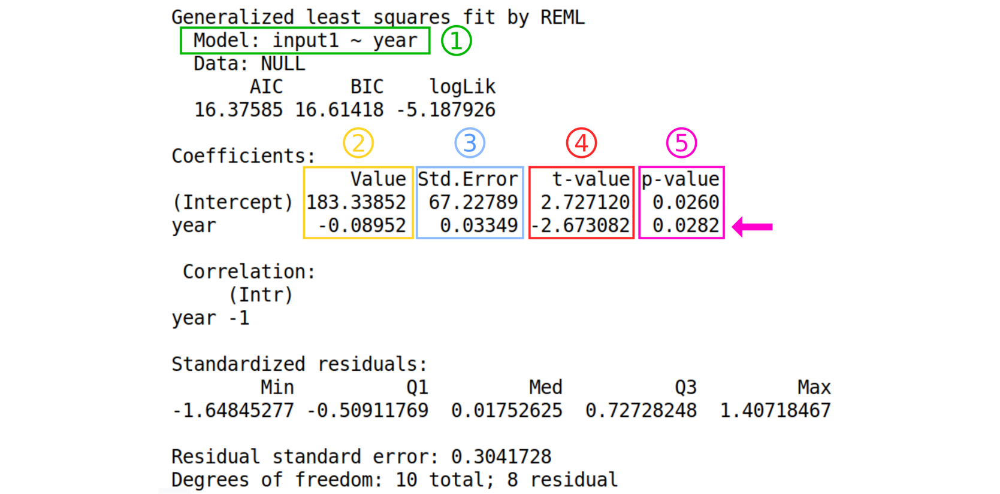
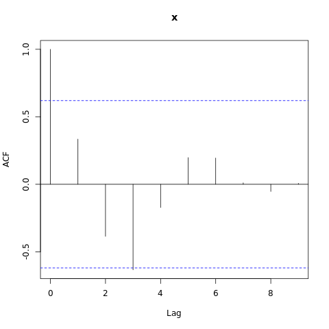

Regional GAM
 Clara Urfer
Clara Urfer Elisa Michon
Elisa Michon Yvan Le Bras
Yvan Le Bras Bérénice Batut
Bérénice Batut Simon Benateau
Simon BenateauOverview
question Questionsobjectives Objectives
What are abundance and trends of a butterfly species?
requirements Requirements
Obtain and filter/manipulate occurrence data
Compute and visualize phenology of a species through the years
Compute temporal abundance trends
time Time estimation: 2 hours 30 minutes
Supporting Materials
last_modification Last modification: Jan 6, 2021
Introduction
This tutorial will show you how to study species abundance through the computation of a flight curve, abundance index, and trends. It will explain you how to use different regionalGAM tools on Galaxy allowing you to deal with datasets containing abundance information for various species per site and per date through a couple of years.
After a certain number of steps, you will be able to extract single species data and study related abundance through the years. The goal of this exercise is to be able to create abundance trend over time and biodiversity indicators. Following these indicators allow to follow trends in terms of population dynamics. You could for example try to predict the occurrences of one specific species in a certain type of environment using the prediction model of climate evolution. Based on charts that you will generate, you could try to explain the evolution of a species with environmental data (temperatures variations, modifications of the environmental conditions).
You will basically learn how to create a file on the basis of which you can create a visual material that can be quite easily understood and therefore be efficient for a large audience.
Agenda
In this tutorial, we will deal with:
Step 1: Pre-processing
The goal of the first step is to upload and prepare the file so that it will be usable for the regional GAM analysis.
Data upload
hands_on Hands-on: Data upload
Create a new history for this tutorial and give it a proper name like
regionalGAM tutorialtip Tip: Creating a new history
Click the new-history icon at the top of the history panel
If the new-history is missing:
- Click on the galaxy-gear icon (History options) on the top of the history panel
- Select the option Create New from the menu
tip Tip: Renaming a history
- Click on Unnamed history (or the current name of the history) (Click to rename history) at the top of your history panel
- Type the new name
- Press Enter
Import the CSV dataset file with only one species from Zenodo or from the data library (ask your instructor)
https://zenodo.org/record/1324204/files/regional%20GAM%20data.csvtip Tip: Importing data via links
- Copy the link location
Open the Galaxy Upload Manager (galaxy-upload on the top-right of the tool panel)
- Select Paste/Fetch Data
Paste the link into the text field
Press Start
- Close the window
By default, Galaxy uses the URL as the name, so rename the files with a more useful name.
tip Tip: Importing data from a data library
As an alternative to uploading the data from a URL or your computer, the files may also have been made available from a shared data library:
Go into Shared data (top panel) then Data libraries
Find the correct folder (ask your instructor)
- Select the desired files
- Click on the To History button near the top and select as Datasets from the dropdown menu
- In the pop-up window, select the history you want to import the files to (or create a new one)
- Click on Import
Check that the file contains a header corresponding to:
"SPECIES","SITE","YEAR","MONTH","DAY","COUNT", and that all the non numeric content are between double quotes as “x” and that separators are “,”
This dataset gathers years of records of the presence of butterfly species per site and per day. Columns indicates species names (“SPECIES”), observation site (“SITE”), date of the observation (“YEAR”,”MONTH”,”DAY”) and number of individuals (“COUNT”). It compiles counts for the Gatekeeper (Pironia tithonus) collected between 2003 and 2012 and extracted from five European BMSs (United Kingdom, Netherlands, France, Germany, and Catalonia-Spain). The Gatekeeper has one generation per year and feeds mainly on Poaceae. It is found in the Central and Southern Europe, North Africa Anatolia, and Caucasus.

Prepare the data
The current dataset contains a lot of data (exact site names for 5 butterfly monitoring scheme). Processing the file in this condition would require time and for the purpose of this tutorial, we will reduce the number of sites. The column with header SITE of the dataset you are using is really long and the SITES are classified into sub-sites (like ESBMS.12, ESBMS.28, ESBMS.55, etc).
Here, we will only keep the sites that are in the Netherlands (NLBMS.XX). We want to create a down-sampled file, by selecting the lines where NLBMS is found.
hands_on Hands-on: Downsample and hide some information
- Text reformatting with awk tool with the following parameters:
- param-file “Select cells from”: Uploaded CSV dataset file tool
“AWK Program”:
NR == 1 { print } /NLBMS/ { print }The first line will skip and print the header and the second will print all the lines where NLBMS is found Warning: depending on the Galaxy instance your are using, this tool can not appear on the tool panel. Another solution can be to use Select lines that match an expression tool to select lines matching ‘NLBMS’ pattern in addition to Select first lines from a dataset tool specifying keeping the first line, so the header, then Concatenate datasets tail-to-head tool to recreate a CSV file from concatenating the header and NLBMS lines of the original csv file.
question Questions
How many sites do you have before and after removing the sites from outside the Netherlands?
You may need to use a tool like Count occurrences of each record tool. If you want to run the same tool with same parameters to several input files, you can directly specify the param-files Multiple datasets option on the tool form for the “from dataset” parameter).
tip Tip: Select multiple datasets
- Click on param-files Multiple datasets
- Select several files by keeping the Ctrl (or COMMAND) key pressed and clicking on the files of interest
solution Solution
The dataset contains 280 sites now against 1143 before down-sampling.
details If your original data is in RData format
hands_on Hands-on: Data upload.
Import the RData
For example, you can upload:
https://zenodo.org/record/1324204/files/gatekeeper_CM%20.RData- RData binary file reader tool with the following parameters:
- param-file “Rdata binary file to explore”: imported RData
- RData parser tool with the following parameters
- param-file “Rdata file to explore”: imported RData
- param-file “File with .Rdata content details”: output of RData binary file reader tool
- “Select which attribute(s) you want to extract”: select everything but “trend”
- “Bind variables in a single tabular when its possible”:
YesIf the tool RData parser tool don’t succeed to create a single tabular file, it generates separate files, each of them containing one column. The file with the
TRENDheader can be let aside as we don’t need it for what will follow.question Questions
If Rdata parser fails to generate a single unified tabular file, can you propose a way to regenerate such a dataset ?
solution Solution
You can do that using:
- Paste two files side by side tool tool with the following parameters:
- param-file “paste”: output from RData parser tool headed with “SPECIES”
- param-file“and”: output from RData parser tool with headed with “SITE”
- Repeat Paste two files side by side tool executions as many times as there are separated files in order to create a final dataset with all the columns:
- Repeat Paste two files side by side tool tool to paste the file containing 2 columns with the one headed by
YEAR- Repeat Paste two files side by side tool tool to paste the file containing 3 columns with the one headed by
MONTH- Repeat Paste two files side by side tool tool to paste the file containing 4 columns with the one headed by
DAY- Repeat Paste two files side by side tool tool to paste the file containing 5 columns with the one headed by
COUNT
Check that the dataset contains only one species
The second step of any Regional GAM data analysis is making sure to have a dataset of only one specific species that you will then be able to use. If you want to create a graph showing abundance evolution by years of several species, you will have to superimpose the graphs on one another.
As the dataset is quite big and may contain heterogeneous information, we need to know whether the data are about one species or more.
hands_on Hands-on: How many species are taken into account in this dataset?
- Count occurrences of each record tool with the following parameters:
- param-file “from dataset”: output of Text reformatting with awk
- “Count occurrences of values in column(s)”:
Column: 1, theSPECIEScolumn- “Delimited by”:
Tab- “How should the results be sorted?”:
With the most common values first- Inspect the generated file by clicking on the galaxy-eye (eye) icon (View data)
- Check that the dataset is for one species only
details Datasets containing information about more than one species
If your dataset contains information about more than one species, you can apply the previous steps and then run an extra-step to select one specific species and show all the data corresponding to it.
As the dataset is quite big and contains heterogeneous information, you want to know whether the data are about one species or more. So the first step consists to count how many species are taken into account in this dataset.
To test these steps, you can use the following dataset:
https://zenodo.org/record/1324204/files/Dataset%20multispecies%20Regional%20GAM.csvquestion Questions
- How many species does your initial dataset take into account ?
- What are their names ?
solution Solutions
- The dataset contains information on 2 different species
- Their names are “Pyronia tithonus” and “Aglais io”.
We now need to create a new file containing the data for only one species
hands_on Hands-on: Creating a new file containing only the data from one species
- Copy the name of the species you are interested in (for example: “Aglais io”).
- Filter data on any column using simple expressions tool
- param-file “Filter”: output of Text reformatting with awk tool
- “With following condition”:
c1=='"Aglais io"'or (another species name)- “Number of header lines to skip”:
1You can repeat this set of actions as much as necessary, changing only the name of the species taken into account. By doing this, you will obtain separated dataset, each of them containing a different species.
- Repeat the last step on all the different
outputsfrom Filter data on any column using simple expressions tool that you have, one by species- Tag your new dataset with an explicit tags as “Count” and “Aglais io” and/or rename this dataset like “Aglais io count file”.
If you want to create a graph showing abundance evolution by years of several species, you will have to superimpose the graphs on one another.
Step 2: Analyze phenology of a species through the years
Compute and visualize the phenology
Phenology, as described in Wikipedia, is the study of periodic plant and animal life cycle events and how these are influenced by seasonal and inter-annual variations in climate, as well as habitat factors (such as elevation).
Now you have a file containing all the data on the species of interest. The main goal of this step is to model one phenology per year using a general additive model (GAM) with time and sites as explanatory variables. This model will be used to predict values for missing counts at local sites in order to improve the quality of the abundance indices.
hands_on Hands-on: Phenology
- Flight curve tool with the following parameters
- param-file “Count file”: output file you just generated with the Text reformatting with awk or Filter data on any column using simple expressions if your file was containing more than one species tool
- Generate the chart using the visualization
- Inspect and expand the output data from Flight curve tool
- Click on the galaxy-barchart (Visualize) icon
- Select Line chart (NVD3) as visualization type
- Give it a proper name, e.g.
Pyronia tithonus phenology raw simple vizu- On Select data area, specify:
- “Provide a label”:
Pyronia tithonus phenology from 2003 to 2012for example- “Pick a series color”: Choose a color for the line
- “Data point labels”:
Column 1- “Values for x-axis”:
Column 2- “Values for y-axis”:
Column 6- On Change settings, specify:
- “X-Axis label”:
Year- “Y-Axis label”:
nm values- Click on Save

This graph displays the modeled flight curve of Pyronia tithonus over the years. But the first year is “null”, probably a left-over of the 1st line with the header, and the week number is not shown.
hands_on Hands-on: Create a new column of the dataset containing the week and the year
- Count occurrences of each record tool with the following parameters
- param-file “from dataset”: output from Flight curve
- “Select”:
Column: 2(the column with the year)- “Delimited by”:
Tab- “How should the results be sorted?”:
By the values being countedInspect and expand the output data from Count occurrences of each record tool
question Questions
What can you see in this file?
solution Solution
A list of the years and the number of occurrence for each year which should match the number of days for each year.
- Column Regex Find And Replace tool with the following parameters:
- param-file “File to process”: output file from flight curve.
- “in column”:
Column 2(the column with the year)- Click on “Insert Check”
- “Find pattern”:
(20[0-9][0-9])- “Replace with”:
-\1- Inspect the file and check if all the years are now written with a
-before the digits.- Merge Columns together tool with the following parameters:
- param-file “Select data”: output from the last Column Regex Find And Replace.
- “Merge column”:
Column: 3(the column with the week)- “with column”:
Column: 2(the column with the year)- Column Regex Find And Replace tool to recreate the original content for the year column:
- param-file “File to process”: output file from Merge Columns together.
- “in column”:
Column 2(the column with the year)- “Find pattern”:
-(20[0-9][0-9])- “Replace with”:
\1Remove beginning of a file tool to remove first line (to avoid header in the visualization)
comment Dataset with information about more than one species
If your dataset contains information about more than one species, you can apply the previous steps and then run an extra-step to select one specific species and show all the data corresponding to it.
- Generate the chart using the visualization with the x-axis corresponding to your column
"week""year".
- Inspect and expand the output data from Remove beginning of a file tool
- Click on the galaxy-barchart (Visualize) icon
- Select Line chart (NVD3) as visualization type
- Give it a proper name, e.g.
Pyronia tithonus phenology simple vizu- On Select data area, specify:
- “Provide a label”:
Pyronia tithonus phenology from 2003 to 2012for example- “Pick a series color”: Choose a color for the line
- “Data point labels”:
Column 6(the nm column) or another one- “Values for x-axis”:
Column 7(the “week-year” column)- “Values for y-axis”:
Column 6(the nm column)- On Customize, specify:
- “X-Axis label”:
Week-Year- “Y-Axis label”:
nm values- Click on Save

This shows the abundance of Pyronia tithonus, over the weeks. We can see there is a peak every year as expected and we can notice some differences in the values between the weeks and years, but not how the weeks overlap between the years. We will plot a stalked version of this visualization to check if there are no unexpected changes and have an idea of the quality of the reconstructed phenology.
hands_on Hands-on: Visualize the years on a stacked graph
- Scatterplot w ggplot2 tool with the following parameters
- param-file “from dataset”: output from Flight curve
- “Column to plot on x-axis”:
4(the column with the year)- “Column to plot on y-axis”:
6- “Plot title”: add a meaningful title (e.g.
Pyronia tithonus phenology stacked visualization)- “Label for x axis”: add a meaningful label (e.g.
Day number)- “Label for y axis”: add a meaningful label (e.g.
nm value)- “Type of plot”:
Line only- “Plotting multiple groups”:
Plot multiple groups of data on one plotto superimpose years- “column differentiating the different groups”:
2to affect one coulor by year- “Color schemes to differentiate your groups”:
set 3or any set of color with more than 10 colors as there are 10 years in our dataset.

With this graph, we can see that Pyronia tithonus records are always around the same weeks every year. We can also see small differences between years but overall the phenology is quite stable and the results of this step seem good and allow us to continue with the calculation of the abundance index.
details Working with more than one species
If you are working with more than one species, you should follow the next steps
hands_on Hands-on:
- Paste two files side by side tool with the following parameters:
- “Paste”:
the outputfrom Merge Columns together (with the dataset for species 1)- “and”:
the outputfrom Merge Columns together (with the dataset for species 2)- “Delimited by”: tabulation
comment Comment: You can add other species.
In order to do so you will have to do as explained below:
- Paste two files side by side tool with the following parameters:
- “Paste”: the
outputfrom Paste two files side by side (with the dataset containing species 1 and 2)- “and”:
the outputfrom Merge Columns together (with the dataset containing species 3)- “Delimited by”: tabulation
- Repeat Paste two files side by side tool with the output from Paste two files side by side (with the data containing species 1, 2 and 3) and with the output from Merge Columns together (with the dataset containing species 4) and so on.
If your input dataset contains information about more than one species, you can now generate a chart for the multi-species dataset:
hands_on Hands-on:
- Inspect and expand the output data from flight curve tool
- Click on the galaxy-barchart (Visualize) icon
- Select a visualization:
line chart (NVD3)- Give it a proper name like
Aglais io & Pyronia tithonus phenology- Select data
- “Provide a label”: The name of the first species, for example
Aglais io- “Pick a series color”: Choose a color
- “Data point labels”:
Column corresponding to the name of the species 1- “Values for x-axis”:
Column corresponding to the "week and year" of the species 1- “Values for y-axis”:
Column corresponding to nm of the species 1- Insert data series:
- *“Provide a label”: he name of the second species, for example
Pyronia tithonus- “Pick a series color”: Choose a different color
- “Data point labels”:
Column corresponding to the name of the species 2- “Values for x-axis”:
Column corresponding to the "week and year" of the species 2- “Values for y-axis”:
Column corresponding to nm of the species 2- You may repeat “Insert data series” as many times as needed depending on the number of different species you want to represent on your chart.
- Click on Customize
- “X-Axis label”:
Week and Year- “Y-Axis label”:
nm values- “Use multi-panels”: click on
No(or you will have separated charts, one for each species)- Click on Save if you are willing to keep it
Compute Abundance Index across sites and years
We now would like to create a file showing the abundance index per year of a chosen species in a certain site.
hands_on Hands-on: Generate an abundance index
- Abundance index tool with the following parameters:
- “Count file”: output from Text reformatting with awk, that should be named
Counting fileand/or taggedCount- “Flight curve output”: output from flight curve
Abundance index tool generates a table with 5 columns:
- Site
- Species
- Year
- Regional GAM
- prop_pheno_sampled
Compute a collated index for each year and estimates the temporal trend
The expected temporal trend allows you to have an overview of the evolution of a species in a certain type of environment in the future.
hands_on Hands-on: Expected temporal trend
- Expected temporal trend tool with the following parameters:
- “Tabular file generated by the ab_index tool”: output of abundance index
Expected temporal trend tool generates 2 files”
-
The graph like:

-
A table with values of “x”, the collated index value by year
Sometimes the expected temporal trend can’t be done on dataset. If you want this action to work, the occurrences on your dataset must lie between the month of April and the end of the month of September.
Model temporal trend
We would like to know if the year has an influence on the abundance of a species. We will use a linear regression to do that.
details More details about the statistics
The model fitted to the data is: \(Y_i = \alpha + \beta x_i + \epsilon_i\) with \(Y_i\) = value of the dependent variable for the unit \(i\) \(\alpha\) = intercept \(\beta\) = slope \(x_i\) = value of the explanatory variable for the unit \(i\) \(e_i\) = residual for the unit \(i\)
hands_on Hands-on: Model temporal trend with linear regression
- Model temporal trend with a simple linear regression tool
- param-file “File generated by the glmmpql/Expected temporal trend tool”: tabular output of temporal trend
- param-file “File generated by the ab_index tool”: output from abundance index
Have a look at the text file result. This is the output of the linear model.

Details about the output from the tool
- The formula of the model following this format: “Model : dependent variable ~ explanatory variable”
- The estimated values of the coefficients
- The standard error of the coefficients
- The value of the “hypothesis test statistic”
- The probability value.
question Questions
- What are the estimates of the regression coefficients?
- Can we use this model to make good predictions?
- Is the test p-value significant?
solution Solutions
- Intercept is 183.33852 and the slope (Year) is -0.08952.
- No, the residual standard error is high.
- Yes (0.0282 < 0.05).
We can also test for autocorrelation in the data.
hands_on Hands-on: Check if there is autocorrelation of residuals
- Autocorrelation test check for temporal autocorrelation in the residuals tool with the following parameters.
- param-file “gls model”: tabular output of Model temporal trend

Have a look at this plot. We can see that one of the value is above the threshold (blue dashed line), therefore we observe autocorrelation in the data. We will now take into account the autocorrelation in the next model.
Take into account the autocorrelation
hands_on Hands-on: Model temporal trend taking into account autocorrelation of residuals
- Linear regression ajusted for autocorrelation in the residuals tool with the following parameters.
- param-file “File generated by the glmmpql/Expected temporal trend tool”: tabular output of temporal trend
- param-file “File generated by the ab_index tool”: output from abundance index
For this step you can use the scratchbook function in order to see the results of both models at the same time.
details How to use the scratchbook
You can follow this tutorial if you want to learn how to use the scratchbook. https://usegalaxy.org/tours/core.scratchbook

Here you can compare the models using the AIC for Akaike information criterion. We can see that the AIC is lower in the model taking the autocorrelation into account. A lower AIC value is associated with less information loss. We will therefore, based on the AIC, select the model taking into account the autocorrelation. We can now represent the data with the trend line from the model.
hands_on Hands-on: Plot the data and the trend line from the model
- Plot abundance with trend line tool with the following parameters.
- param-file “File generated by the ab_index tool”: output from abundance index
- param-files “gls model”: outputs of Model temporal trend with a simple linear regression.

You can see the trends is an apparent decrease. Here results are statistically significant so we can say that there is a significant decrease of the abundance.
Conclusions
In this tutorial, you have analyzed regional GAM data to extract useful information in order to be able to show different tendencies of a chosen species. Therefore, you are now able to treat the dataset so that it shows only the data for one specific species of your choice. From there, you can show the phenology of this species through the years first on a dataset and then on a visual chart. You have also learned how to represent on a single chart the phenology of various species. Afterwards, we have shown you how to create a dataset containing the information on the abundance of a species per year and per site. Based on which you can henceforth visually represent the annual abundance trend on a chart. Thereafter, you have the possibility of showing the expected temporal trend, based on which you will be able to assess the abundance of species. The last part of this tutorial has shown you how to calculate the linear regression allowing you to determinate whether the year has an influence on the abundance of a species or not.
keypoints Key points
We sequentially computed phenology, abundance index, trend and model this trend
We learned how to interpret a trend using modeling and data visualization
This tool compute phenology in order to predict missing data, no definitive conclusion can be made on the phenology using this tool
Useful literature
Further information, including links to documentation and original publications, regarding the tools, analysis techniques and the interpretation of results described in this tutorial can be found here.
Feedback
Did you use this material as an instructor? Feel free to give us feedback on how it went.

Citing this Tutorial
- Clara Urfer, Elisa Michon, Yvan Le Bras, Bérénice Batut, Simon Benateau, 2021 Regional GAM (Galaxy Training Materials). /training-material/topics/ecology/tutorials/regionalGAM/tutorial.html Online; accessed TODAY
- Batut et al., 2018 Community-Driven Data Analysis Training for Biology Cell Systems 10.1016/j.cels.2018.05.012
details BibTeX
@misc{ecology-regionalGAM, author = "Clara Urfer and Elisa Michon and Yvan Le Bras and Bérénice Batut and Simon Benateau", title = "Regional GAM (Galaxy Training Materials)", year = "2021", month = "01", day = "06" url = "\url{/training-material/topics/ecology/tutorials/regionalGAM/tutorial.html}", note = "[Online; accessed TODAY]" } @article{Batut_2018, doi = {10.1016/j.cels.2018.05.012}, url = {https://doi.org/10.1016%2Fj.cels.2018.05.012}, year = 2018, month = {jun}, publisher = {Elsevier {BV}}, volume = {6}, number = {6}, pages = {752--758.e1}, author = {B{\'{e}}r{\'{e}}nice Batut and Saskia Hiltemann and Andrea Bagnacani and Dannon Baker and Vivek Bhardwaj and Clemens Blank and Anthony Bretaudeau and Loraine Brillet-Gu{\'{e}}guen and Martin {\v{C}}ech and John Chilton and Dave Clements and Olivia Doppelt-Azeroual and Anika Erxleben and Mallory Ann Freeberg and Simon Gladman and Youri Hoogstrate and Hans-Rudolf Hotz and Torsten Houwaart and Pratik Jagtap and Delphine Larivi{\`{e}}re and Gildas Le Corguill{\'{e}} and Thomas Manke and Fabien Mareuil and Fidel Ram{\'{\i}}rez and Devon Ryan and Florian Christoph Sigloch and Nicola Soranzo and Joachim Wolff and Pavankumar Videm and Markus Wolfien and Aisanjiang Wubuli and Dilmurat Yusuf and James Taylor and Rolf Backofen and Anton Nekrutenko and Björn Grüning}, title = {Community-Driven Data Analysis Training for Biology}, journal = {Cell Systems} }